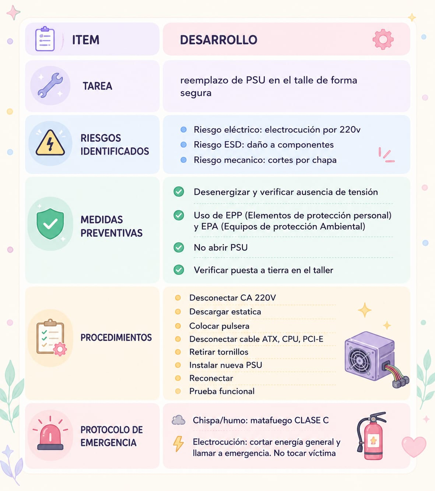

27/04 ACTIVIDAD 4 (Norma de seguridad electrica ESD)
CONSIGNA
cambiar PSU en el taller describir proceso paso paso desde el ingreso del taller hasta que termina
PALABRAS
- MATAFUEGO CLASE C: fuego electrico. usa polvo ABC o CO2(dioxido de carbono)
- DIYUPTOR DIFERENCIAL: corta energia si detecta fuga a tierra- protege a persona
- PUESTO A TIERRA: tercera pata de enchufe. deriva descarga electrica, no a la persona
- ZONA ESD PROTEGIDA: Area de trabajo con mantas y pulseras disipativas
1- Mencione 3 EPP que usaria y porque
- PULSERA ANTIESTATICA:previene ESD (descarga electroestatica ) de placa madre
- CALZADO DE SEGURIDAD DIELECTRICO: envia descarga a tierra
- ANTEOJOS DE PROTECCION: protege explocion de capacitor
2-¿Porqué nunca se debe abrir una PSU? ¿ Qué componente interno guarda una carga mortal?
Los capacitores de etapa primaria almacena 300 V de corriente continua incluso semanas desenchufado. la descarga es mortal.
3-Explique que haria si al conectar la PSU nueva salta el diyuntor diferencial del taller
- no rearmar inmediatamente el dipyuntor(no subirlo)
- desconectar todos los cables de PSU internos conectados de la PM (aislar) [abrir gab y desenchufar ATX,ATX_V12,PCI EXPRESS, SATA,MOLEX,BERG]
- conectar solo CA 200v y rearmar diferencial (si salta de nuevo , posiblemente psu esta en 115 v, recibiendo doble voltaje (cortocircuito))
- integrar conectores internos a la PM de a uno (verificar el causante del salto de diyuntor) orden
- si salta uno ese es el componente con problemas : cortocircuito,capacitor reventado
CUADRO DETALLADO:>
